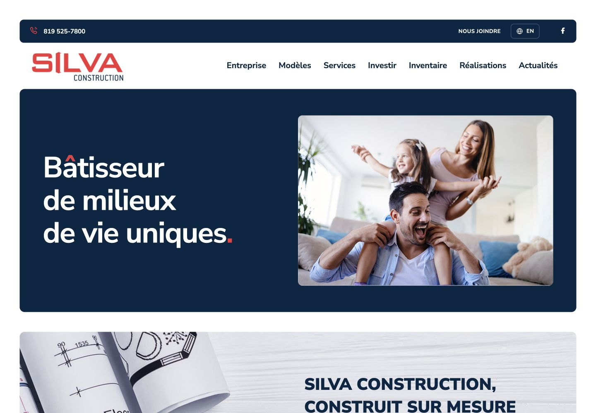
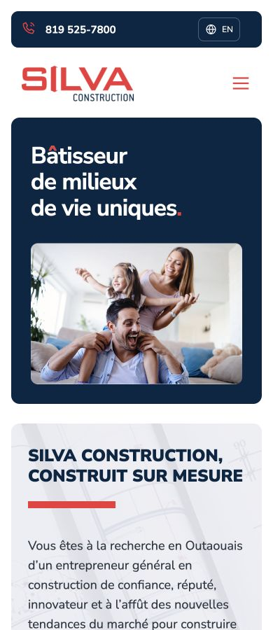
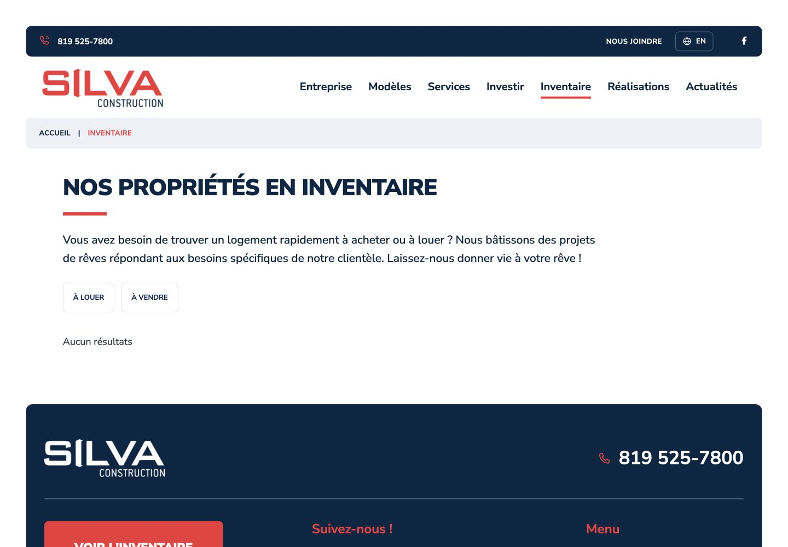

Silva Construction
Final bilingual review
The shared finish uses restrained 8–12px corners and a consistent page-title grid across all English and French pages: typography, navigation, spacing, surfaces, model details, galleries, forms and footers. Everything remains local and uncommitted.
Each page was checked at 1440px and 390px, with page-level screenshots below. Gallery covers were also checked after normalizing their layout and loading priority. Shared menus, nested mobile navigation, paired languages, carousels, keyboard controls and lightboxes were exercised.
Live typography, preserved branding
The French and English hero headlines are selectable HTML text in the locally served Nunito Sans typeface. The French “â” remains an actual accented character, with only its circumflex coloured red; the final period is a real red text character. Navigation, buttons, fields and body copy use the same type family. Official logos and architectural plan/render artwork remain the supplied originals, as requested.


Inventory title spacing
The title, red rule, description and filters now have distinct spacing, with aligned gutters across page types.

Before publication
Form delivery: the 22 forms need an approved static-compatible delivery service. The preview validates fields and clearly states that it cannot send.
Original PDF plans: the source contains no PDFs; 20 download buttons originally looped back to their own pages. They now show unavailable downloads with the existing phone number to request a plan. Supply the original PDFs before enabling those downloads.
Approval: no commit, push, deployment or live-site change has been made.
The source export contained 30 image slots linked to HTML documents. Those invalid slots were removed; all valid supplied photos and original media files remain unchanged. Existing page copy is retained; live headlines, clearer shared controls and explicit availability notices are documented additions. Some source translations and content are incomplete; missing language counterparts are explicitly linked to the other-language homepage rather than invented.
Every page, desktop and mobile
| Page | Desktop | Mobile |
|---|
Layout results · Content and asset audit · Source-media repairs · Language controls · Live headline records